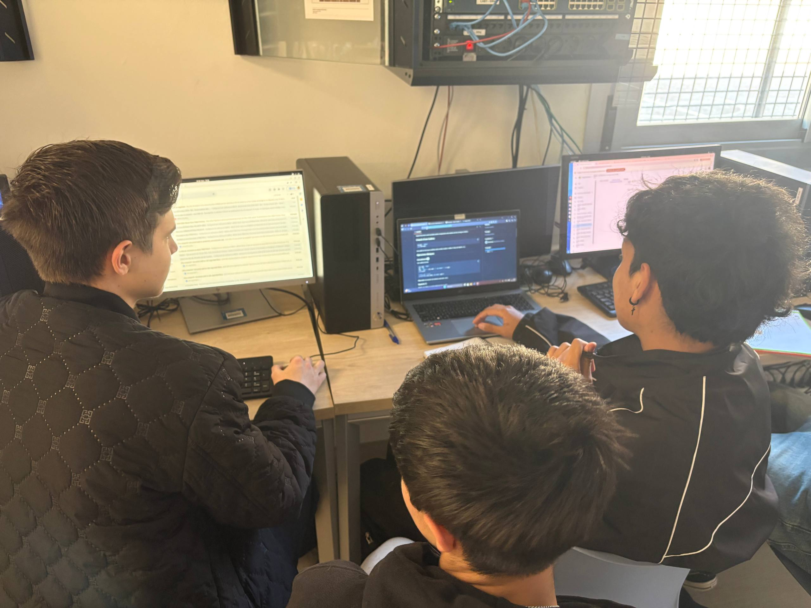
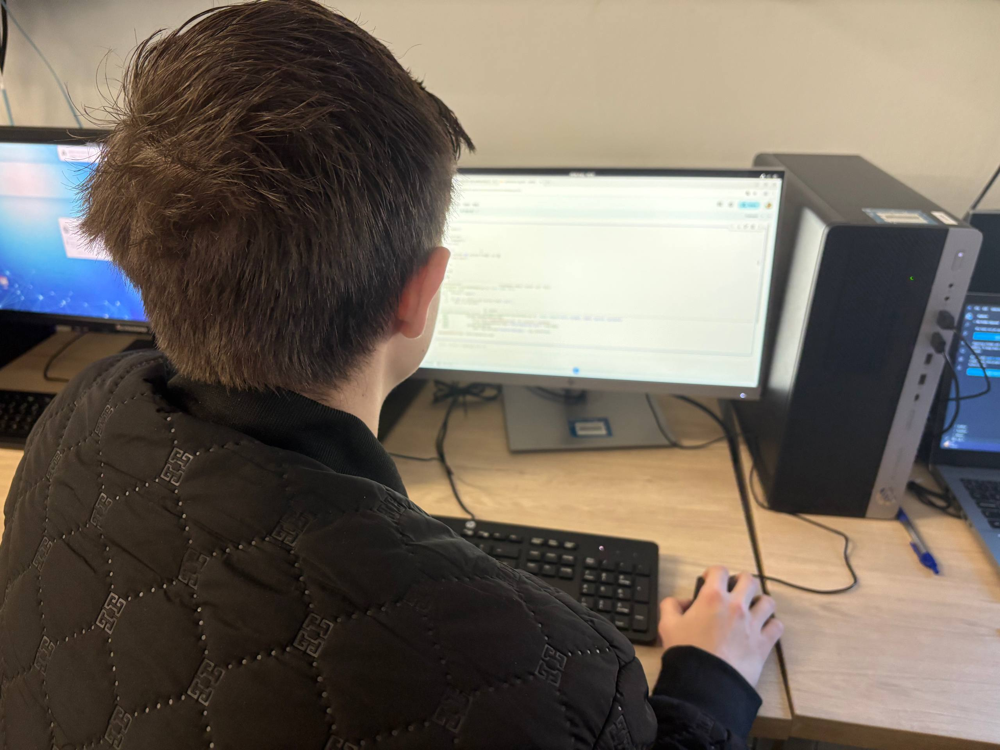

Galeria de l'Aula
Un cop d'ull a l'entorn de treball, la concentració i el desenvolupament de pràctiques.

Resolució de reptes (Python)

Treball col·laboratiu entre iguals

Ús d'entorns IDE i depuració
Activitat d'ensenyament-aprenentatge sobre entorns de desenvolupament (IDE), estructures de control i codificació d'algorismes en Python.
Descarregar Fitxa E-AInformació general de l'activitat programada per a l'alumnat de Sistemes Microinformàtics i Xarxes.
Reconeix l'estructura d'un programa informàtic, identificant i relacionant els elements propis del llenguatge de programació (Python).
El projecte combina l'exposició teòrica amb l'Aprenentatge Basat en Projectes (ABP) i mecàniques de gamificació per fomentar la motivació.
Es fomenta el treball autònom a l'aula taller. L'alumnat utilitza Classroom per gestionar les entregues i eines com Google Colab per programar. També compten amb repositoris de GitHub amb "cheat sheets" (apunts) i < a href="https://dmorenoar.github.io/python-codex-smx/">El Còdex del Programador, un espai de consulta fiable per seguir la pròpia evolució.
Python / Colab
GitHub
Classroom
Còdex / Jocs
Nivell bàsic d'iniciació per consolidar sintaxi.
Nivell mitjà que requereix concentració i relacionar conceptes.
Nivell avançat. Reptes amb dificultat extra per potenciar el pensament lògic.
Mecanismes per valorar l'assoliment dels resultats d'aprenentatge i millora contínua.
Ponderació orientativa pel càlcul de la nota del RA1 (24h):
Es valora la comprensió del codi, no només que funcioni. Els errors parcials no invaliden la pràctica (avaluació progressiva). La còpia sense comprensió penalitza greument.
Tot i no haver-hi adaptacions curriculars significatives en FP (no es modifiquen els RA), s'apliquen mesures de flexibilització i suport:
Els exercicis per nivells i les activitats alternatives permeten ajustar el ritme d'aprenentatge a cada alumne/a sense reduir l'exigència.
Temps addicional en proves, adaptació d'enunciats, tutoria entre iguals i seguiment proper de l'equip docent.
En cas de baixa del professorat, es disposa de tota la programació i recursos a Classroom. En cas de dificultats motrius o visuals de l'alumnat, el coordinador TIC assegura l'adaptació dels espais i programari.
Un cop d'ull a l'entorn de treball, la concentració i el desenvolupament de pràctiques.
Resolució de reptes (Python)

Treball col·laboratiu entre iguals

Ús d'entorns IDE i depuració
Accedeix a la fitxa completa del Projecte d'Ensenyament-Aprenentatge on es detallen exhaustivament tots els criteris i les rúbriques d'avaluació.
Autoria: Daniel Moreno Arellano · Llicència CC BY-NC-SA
Descarregar Fitxa Oficial